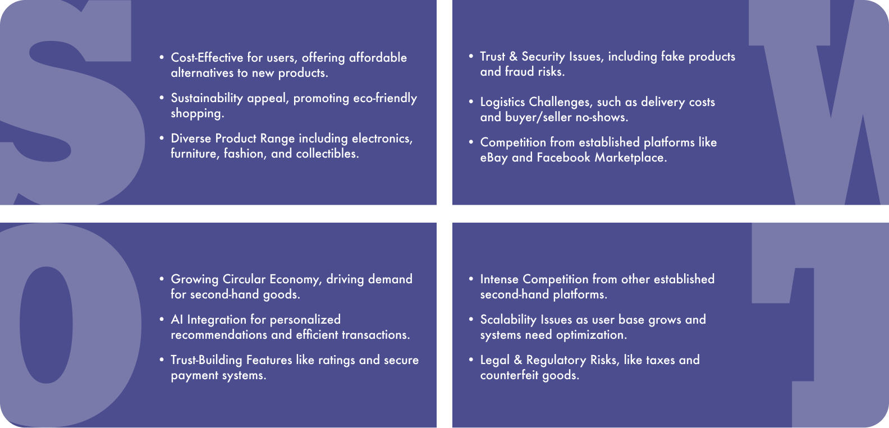
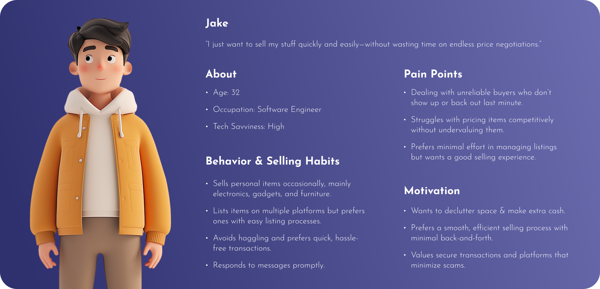

/ 01 OVERVIEW
Dollar Flip, an innovative second-hand trading app, is poised to meet the burgeoning demand for pre-owned goods in the North American market. In today's age, characterized by a growing emphasis on sustainability and resource sharing, Dollar Flip emerges as a beacon of convenience and reliability. This platform provides users with a seamless experience to buy and sell a diverse array of second-hand items, ranging from furniture to electronics to clothing. Dollar Flip aspires to establish itself as the premier second-hand trading platform in North America, offering users unparalleled convenience and security while championing the principles of resource sharing and sustainability.
/ 02 RESEARCH AND ANALYSIS
Through thorough research and analysis of the global regional market outlook for second-hand products, we've uncovered significant insights.
1 / Survey: The North American second-hand market is rapidly growing due to the abundance of high-quality items no longer needed by their original owners. Consumers frequently refresh their belongings, contributing to the continuous circulation of top-notch second-hand goods through donations or sales. By 2024, North America is poised to remain one of the most attractive markets globally, fueled by sustained demand for second-hand goods in the region.
1 / Survey: The North American second-hand market is rapidly growing due to the abundance of high-quality items no longer needed by their original owners. Consumers frequently refresh their belongings, contributing to the continuous circulation of top-notch second-hand goods through donations or sales. By 2024, North America is poised to remain one of the most attractive markets globally, fueled by sustained demand for second-hand goods in the region.

2 / Cometitive Analysis: competitive analysis was conducted focusing on these prominent participants in the global second-hand goods industry, including eBay, Facebook Marketplace, OfferUp, Depop, Poshmark, ThreadUp, Tradesy, etc.
A globally renowned e-commerce giant, offering a array of new and used products, with a massive user base and unparalleled global reach.
Integrated within the social media platform, it enables local buying and selling, tapping into Facebook's extensive user network.
Known for its user-friendly interface, this local marketplace facilitates trading second-hand items within communities.
Catering to fashion-forward users, it specializes in second-hand clothing, accessories, and beauty products, with a focus on social engagement.

3 / Personas and Questionnaire: The development of personas and questionnaire analysis has provided valuable insights into user behavior and preferences, informing the UX design process.

